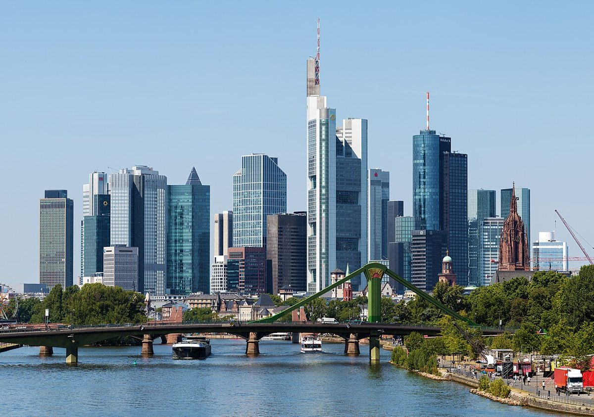

Frankfurt am Main: Eine Reise durch die Finanzmetropole

Frankfurt am Main, die fünftgrößte Stadt Deutschlands, ist bekannt als Finanzzentrum, bietet aber auch eine faszinierende Mischung aus Moderne und Tradition. Die beeindruckende Skyline mit Wolkenkratzern wie dem Commerzbank Tower hat der Stadt den Spitznamen "Mainhattan" eingebracht.
Beste Reisezeit
Die ideale Zeit für einen Besuch in Frankfurt sind die Monate Mai bis September, wenn die Temperaturen angenehm sind und viele Freiluftveranstaltungen stattfinden. Der Weihnachtsmarkt im Dezember ist ebenfalls ein Highlight.
Top 3 Highlights
1. Römerberg: Der historische Marktplatz mit Fachwerkhäusern und dem Rathaus Römer.
2. Main Tower: Genießen Sie den besten Blick über die Stadt von der Aussichtsplattform.
3. Museumsufer: Eine einzigartige Ansammlung hochkarätiger Museen entlang des Mains.
Kulinarische Tipps
Probieren Sie unbedingt Frankfurter Spezialitäten wie Grüne Soße mit Eiern und Kartoffeln, Frankfurter Würstchen und den typischen Apfelwein in einem der traditionellen Apfelweinlokale in Sachsenhausen.
Haiktec
- Pflegekosten-Tracker & Budgetplaner für Angehörige
- Effiziente Selbstorganisation für Freelancer: 7 Schritte zu mehr Produktivität und weniger Stress
- Ostsee & Nordsee Reisebudget-Tracker & Planer für Selbstständige: Professionelle Excel-Vorlage mit automatischer Summenberechnung & Ausgabenkategorisierung (2026 Edition)
Text mit KI erstellt und automatisch geprueft.